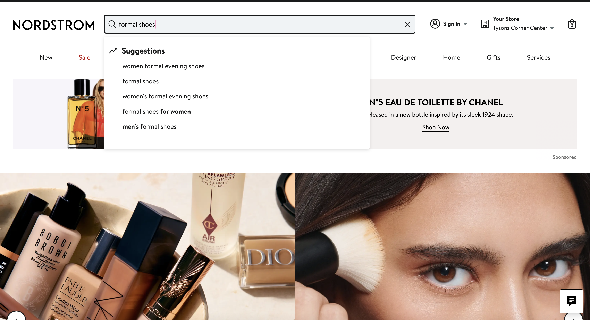
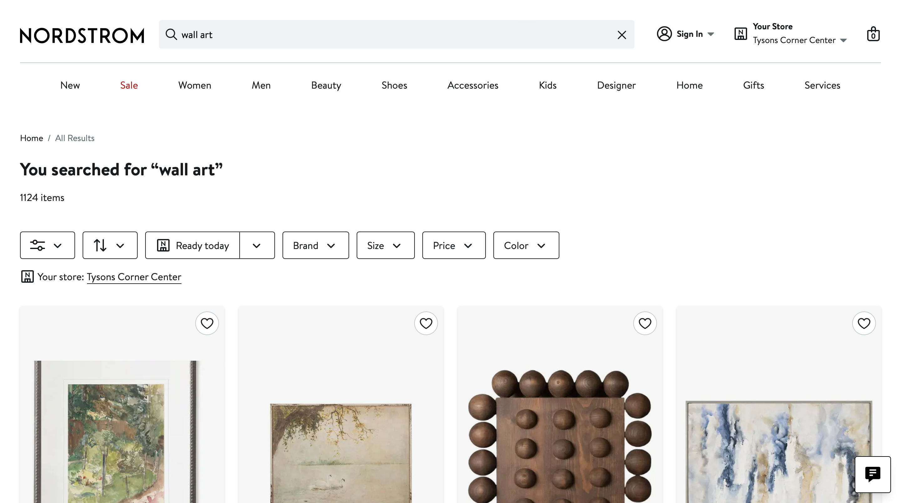
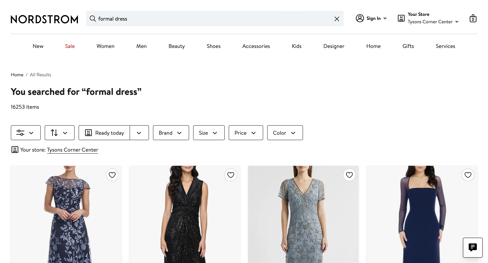
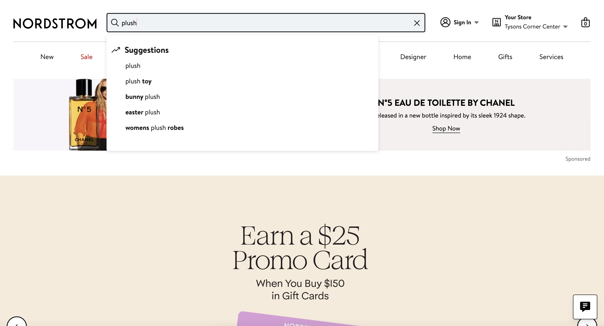

Find a pair of shoes that is on sale for a first date.
Notes: The user used the search bar to search "formal shoes". The user scrolled until they found a pair of shoes they liked, then added a size 6 to the cart.

Time: 40.96 seconds
Find the highest-priced wall art for your new house.
Notes: The user used the search bar to search "wall art". The user did not sort by price. The user scrolled through the selection and could not find the highest price wall art.

Time: 52.23 seconds
Book an in-store styling appointment for women at Tysons Corner.
Notes: The user started by verifying the store's location in the top right corner. The user scrolled through the page until the footer. The user searched the footer and did not find styling appointment. The user scrolled to the top of the page and clicked around a few of the headers. The user then found the styling appointment page. They chose a fashion expert styling appointment.

Time: 2.20.52 seconds
Find a gift item under 100 dollars for a friend.
Notes: The user used the search bar to search "plush". The user scrolled until they found a dragon plush. The user added the plush to cart.

Time: 24.57 seconds
Find apparel appropriate for a Wedding.
Notes: The user used the search bar to search "formal dress". The user scrolled until they found a dress they liked. Then they picked a size 4 and added to the cart.
Time: 45.12 seconds
Overall Notes:
1. The user frequently used the search bar to directly search what they needed.
2. The user could not find the highest priced wall art because they did not utelize the sort and filter sections.
3. The user had trouble finding the styling appointments because it could not be found through using the search bar.
4. The user added their items to the cart and then removed them from the cart when the test was finished.